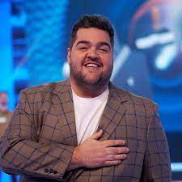

información personal
Darío Tadeo Pacheco Barassi nació en San Juan el 5 de noviembre de 1983,
actualmente tiene 39 años y tiene dos hijo y una esposa con la cual se casó en 2015,
él es conductor, humorista, actor y abogado Argentino.
Luego de haber terminado sus estudios secundarios, se radicó en Buenos Aires,
donde estudió y se recibió de abogado en la universidad con diploma de honor.
Mientras estudiaba abogacia, estudió actuación con Alicia Zanca.
Trabajó un tiempo como abogado en el estudio de su hermano, en el ministerio de salud.
Sin embargo su popularidad comenzó como notero. En un casting de 2008, buscaban a un
cronista divertido para el magazine de las mañanas del Telefé, AM, antes del mediodía
y el fue a la convocatoria a acompañar a un amigo.